Madrid est une municipalité et une ville d' Espagne . La ville, avec la catégorie historique
de ville , est la capitale de l'État et de la Communauté de Madrid .
Dans sa zone municipale, la plus peuplée d'Espagne, 3 280 782 personnes sont enregistrées ( INE 2022), ce
qui en fait la deuxième ville la plus peuplée de l' Union européenne , ainsi que sa zone métropolitaine , avec 6 779 888 habitants enregistrés.
Elle a un PIB nominal de 133 129 millions d'euros — 12 % du PIB national — et un PIB nominal par habitant de 41 600 € (2018), étant la 1ère zone métropolitaine espagnole en activité économique −19 % du PIB.
C'est également le premier dans la plupart des nuitées à l'hôtel.
En tant que capitale de l'Espagne, elle abrite le siège du gouvernement de la nation et ses départements ministériels , les Cortes Generales ( Congrès des députés et Sénat ), la
Cour suprême et la Cour constitutionnelle , ainsi que la résidence officielle des rois d'Espagne.
Espagne 18 et le président du Gouvernement .
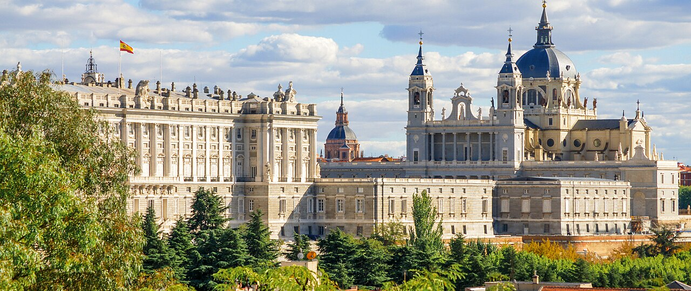
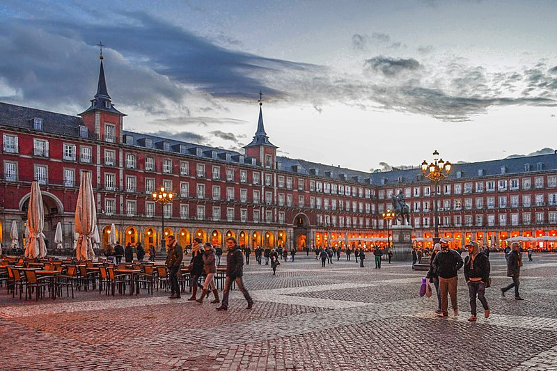
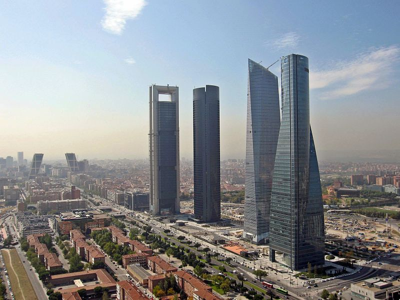
LE RESEAU METROPOLITAIN DE MADRID
Le métro de Madrid est le réseau ferroviaire métropolitain de la ville espagnole de Madrid et
de sa zone métropolitaine . Elle fut inaugurée le 17 octobre 1919 par le roi Alphonse XIII .
Il constitue le réseau de métro le plus étendu d'Espagne et le troisième d'Europe (seulement derrière les métros de Moscou et de Londres ), avec 295 kilomètres en 2024.
Avec un total de 302 stations, c'est le troisième en Europe en termes de kilomètres, après ceux de Moscou
et de Londres , et le huitième au monde, après les métros de Shanghai , Pékin , Londres , New York , Séoul , Moscou et Guangzhou .
C'est également le deuxième réseau de métro le plus ancien du monde hispanophone, après le métro de Buenos Aires .
C'est aussi l'un de ceux qui se sont développés le plus rapidement entre 1995 et 2007. En 2023, 662,3 millions de déplacements ont été enregistrés.
Sur les 302 stations actuelles , une ligne passe par 237 (dont 34 métro léger), deux lignes changent au
27, trois lignes s'arrêtent au 11 et quatre lignes coïncident à la station Avenida de América .
Dans 3 des gares sans correspondance ( Tres Olivos , Estadio Metropolitano et Puerta de Arganda ), les
trains changent sur la même ligne et à 25 arrêts il y a une correspondance avec le réseau Madrid Cercanías de Renfe .
Ces 276 stations représentent un total de 328 arrêts si l'on additionne le total de chaque ligne au lieu de compter les stations individuellement, système
de comptage utilisé dans la plupart des rapports et documents.
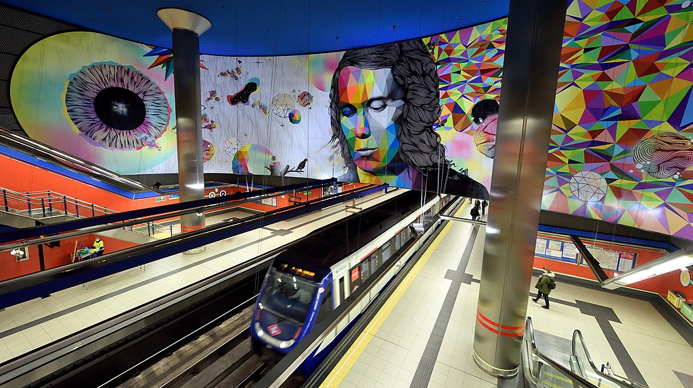
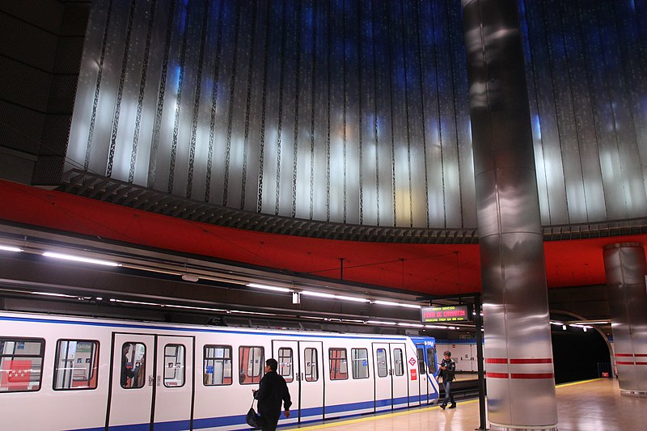
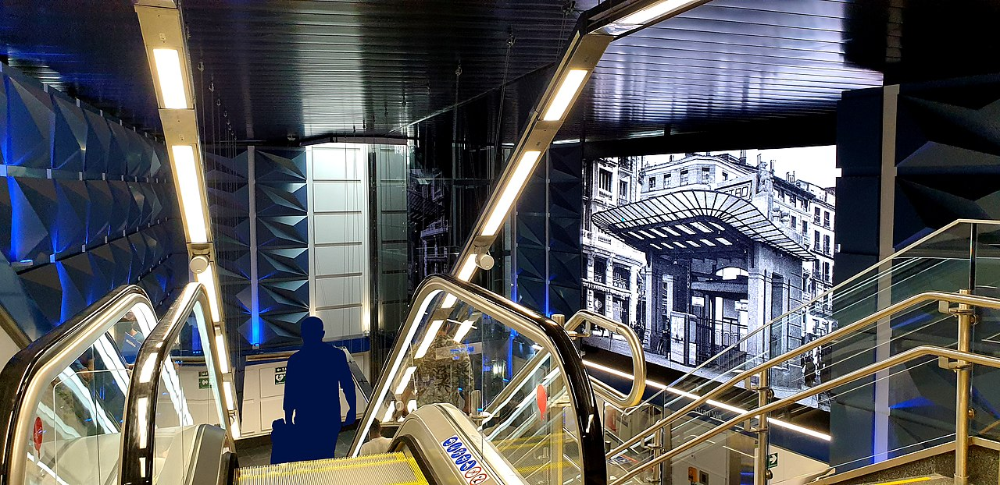
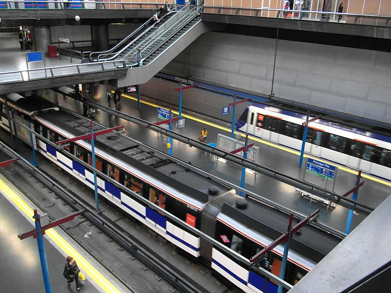
AIR MADRID
L'aéroport Adolfo Suárez Madrid-Barajas1 (code IATA : MAD • code OACI : LEMD) est le plus
important d'Espagne et dessert la ville de Madrid. En 2013, il est classé 29e aéroport mondial
Il est situé à 13 km au nord-est du centre de Madrid (sur les villes de Madrid, Paracuellos de
Jarama, San Sebastián de los Reyes et Alcobendas) et compte quatre terminaux. L'aéroport est
géré par Aeropuertos Españoles y Navegación Aérea (AENA). Son nom est celui de Barajas, un des vingt-et-un districts de Madrid.
La majeure partie des emprises de l’aéroport occupe approximativement la moitié nord-est de ce
district, dans les quartiers (barrios) de Aeroporto et Timón.
L'aéroport est desservi par des stations de métro, et une ligne ferroviaire.
Cette section ne s'appuie pas, ou pas assez, sur des sources secondaires ou tertiaires indépendantes du sujet.
Pour l'améliorer, ajoutez-en, ou placez des modèles {{Référence nécessaire}} ou {{Source insuffisante}} sur les passages mal sourcés.
(janvier 2022)
La construction de cet aéroport est entamée en 1927.
Il est ouvert au trafic international le 22 avril 1931, les opérations commerciales régulières débutant deux ans plus tard.
Un petit terminal est construit avec une capacité de 30 000 passagers par an, accompagné de plusieurs hangars, et d'un aéroclub. Le premier vol régulier est réalisé par la compagnie Líneas Aéreas Postales Españolas (LAPE) avec sa ligne à destination de Barcelone. Ce n'est que plus tard dans les années 1930, que les vols internationaux desservent des destinations européennes et africaines.
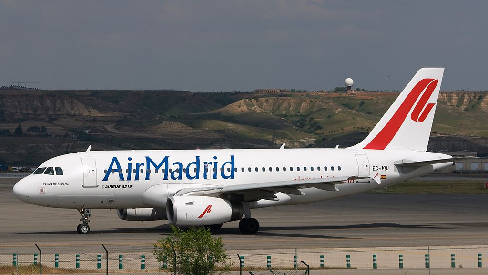
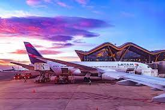
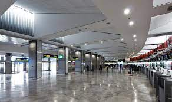
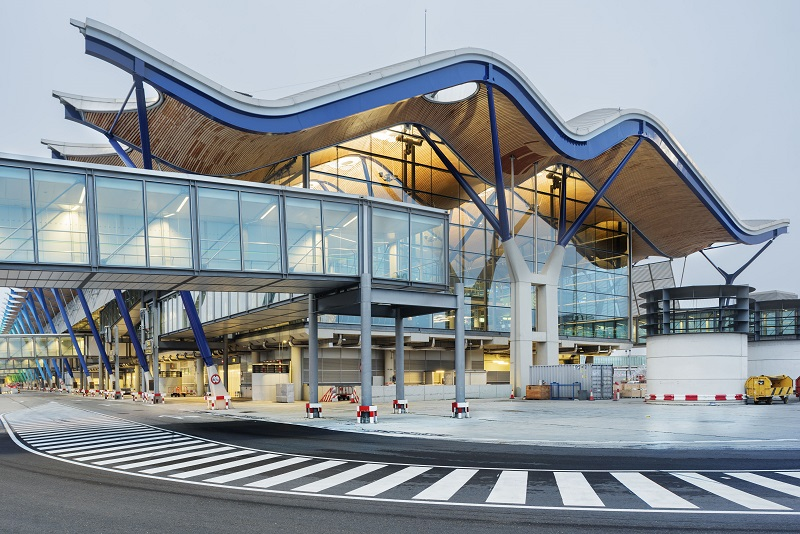
SANTIAGO BERNABEU
Le stade Santiago Bernabéu (en espagnol : Estadio Santiago Bernabéu) est un stade de football situé à Madrid, en Espagne.
Inauguré le 14 décembre 1947 et propriété du Real
Madrid, sa capacité est depuis 2023 de 84 744 spectateurs. Il se trouve au cœur de la
capitale espagnole, sur le Paseo de la Castellana dans le district de Chamartín.
Il est desservi par la station de métro du même nom.
Initialement connu comme le Nouveau stade Chamartín, il reçoit son nom actuel en 1955 en l'honneur du président du club de l'époque, Santiago Bernabéu2.
Résidence du Real Madrid, un des clubs de football, si ce n’est le club le plus prestigieux au monde, le
stade a accueilli certains des événements les plus importants du sport mondial, parmi lesquels les finales
de la Coupe du monde 1982, de l'Euro 1964 et de la Coupe d'Europe des clubs champions, devenue Ligue des
champions, à quatre reprises (1957, 1969, 1980 et 2010).
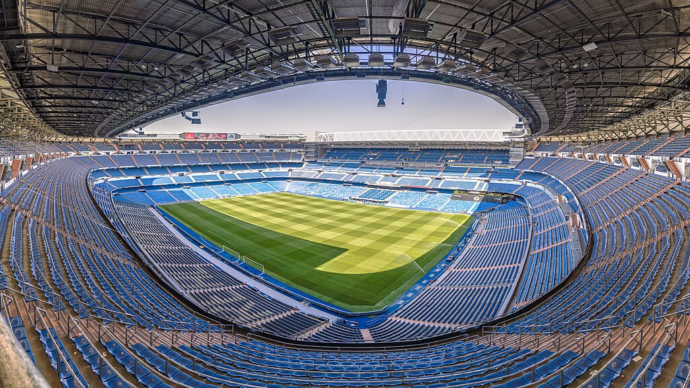
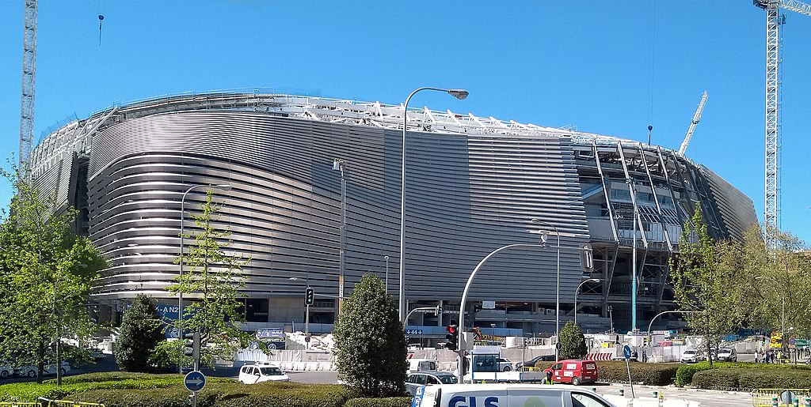
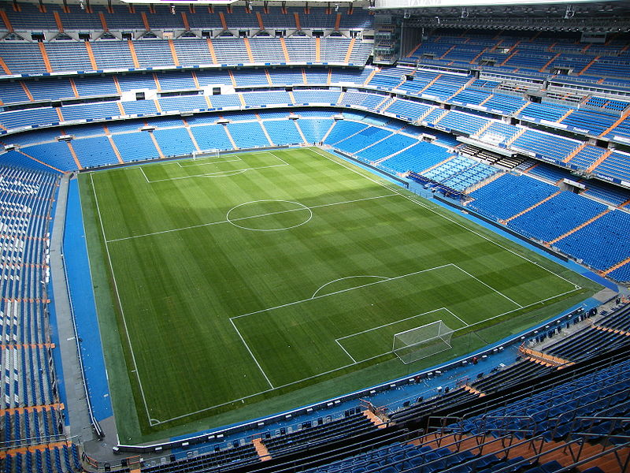
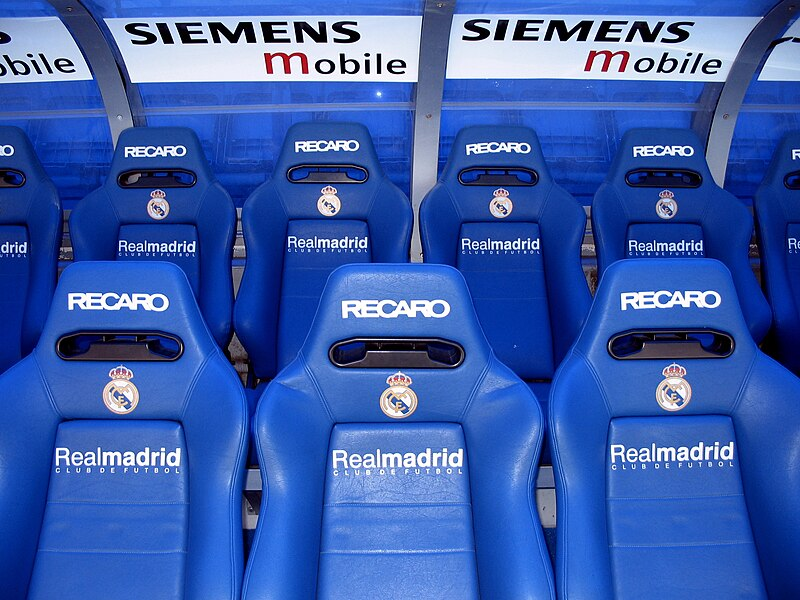
PARC DE RETIRO
Le parc du Retiro est un grand parc de 125 hectares et plus de 15 000 arbres situé à Madrid.
Il fut créé entre 1630 et 1640.
Fontaine de L'ange Tombé (Ricardo Bellver, 1877)
Les origines de ces jardins se situent entre les années 1630 et 1640, lorsque le comte-duc d'Olivares (Don Gaspar de Guzmán y Pimentel), favori
de Philippe IV, offrit au roi des terres pour les distractions de la Cour autour du Monastère des Hiéronymites de Madrid (Monasterio de los Jerónimos).
Ainsi, avec la reconstruction du quartier royal (Cuarto Real) qui était joint au Monastère, débuta la
construction du palais du Buen Retiro (Palacio del Buen Retiro). Il comptait alors quelque 145 hectares.
Même si cette résidence secondaire royale était en ces temps au-dehors de Madrid, elle n'était pas
excessivement loin du Palais royal et elle devint un endroit très agréable, étant
dans une zone boisée et fraîche.
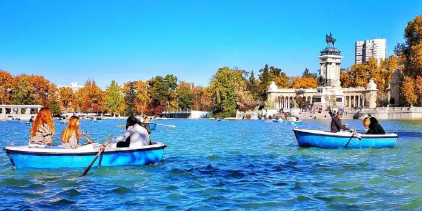
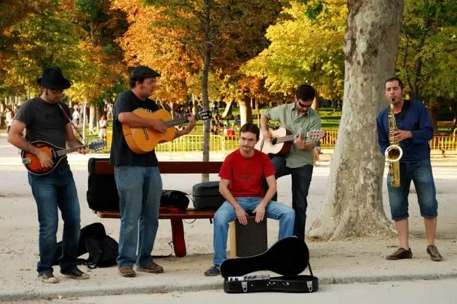
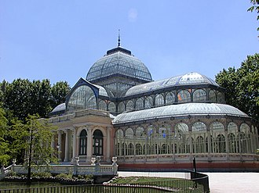
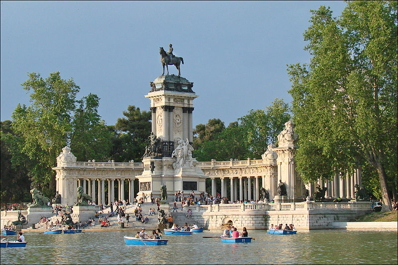
 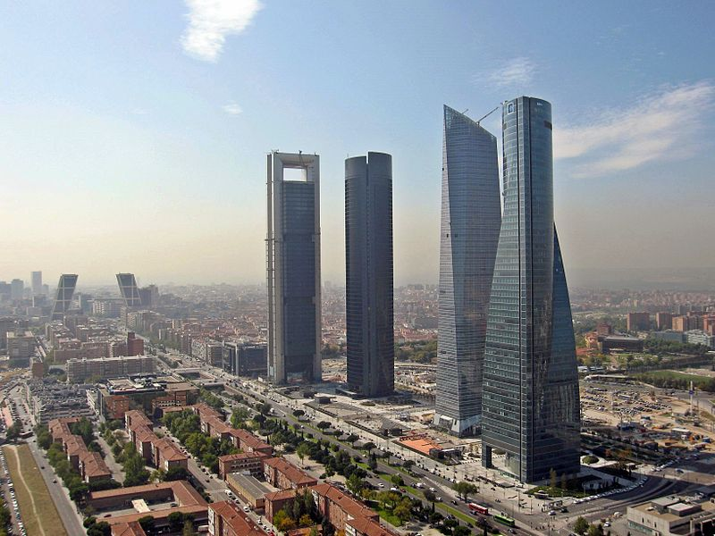
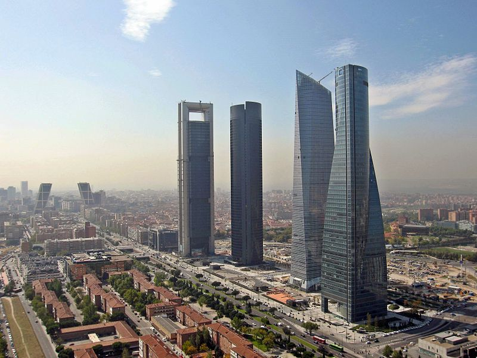